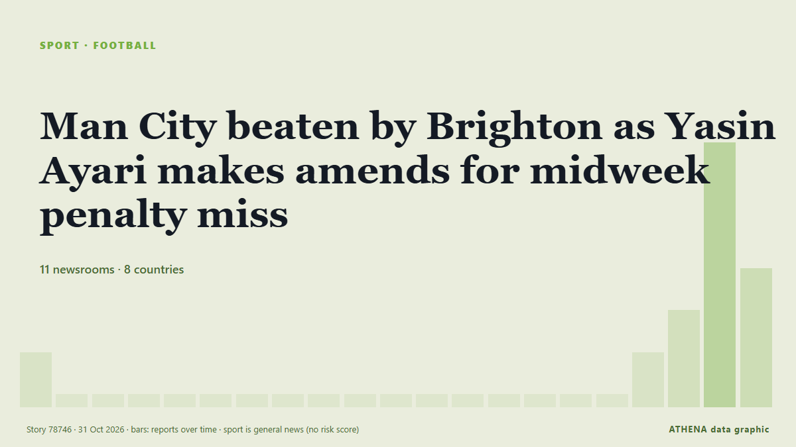

Fútbol
| 18 oct | 0 |
|---|---|
| 19 oct | 1 |
| 20 oct | 0 |
| 21 oct | 1 |
| 22 oct | 2 |
| 23 oct | 4 |
| 24 oct | 0 |
| 25 oct | 1 |
| 26 oct | 1 |
| 27 oct | 3 |
| 28 oct | 4 |
| 29 oct | 1 |
| 30 oct | 6 |
| 31 oct | 0 |
Los titulares se muestran en inglés, tal como se publicaron.

Man City beaten by Brighton as Yasin Ayari makes amends for midweek penalty miss
Ayari missed a spot-kick in Wednesday’s shoot-out defeat in the Carabao Cup against City but scored the only goal of the game on Saturday. de The Irish News (Belfast)
Hakimi bags hat-trick as PSG thrash Le Havre 5-1
Achraf Hakimi rose to the occasion scoring a glorious hat-trick on Friday as a heavily rotated Paris Saint-Germain thumped rock-bottom Le Havre 5-1 in Ligue 1. de Vanguard
Michael Carrick confirms Bruno Fernandes will remain Manchester United captain
Manchester United captain Bruno Fernandes turned on head coach Michael Carrick after one of the club's most humiliating nights in European history. de MyJoyOnline
England heading out of the World Cup despite beating Papua New Guinea
The story of England’s World Cup exit - despite their win over Papua New Guinea. de Yorkshire Post
Kenya: Ruto - Why Bayern V Ajax in Nairobi Is Perfect Tribute to Former PM Raila Odinga
[Capital FM] NAIROBI -- President William Ruto believes there could be no better way to honour former Prime Minister Raila Odinga than a blockbuster tie between Bayern Munich and Ajax at a stadium… de AllAfrica
Azerbaijan to face Afghanistan in final match at FIFA U-15 World Cup in Baku
Azerbaijan will play its final match at the FIFA U-15 World Cup and Festival, being held in Baku, today. de AzerNews
Everton beat Newcastle to set up League Cup quarter-final with Fleetwood
Everton advanced to the League Cup quarter-finals with a 3-1 victory over Newcastle United on Thursday, setting up a clash against fourth-tier side Fleetwood Town. de Cyprus Mail
Africa Cup of Nations to maintain 2-year cycle after CAF U-turn
The Africa Cup of Nations will maintain its two-year cycle after a U-turn from the Confederation of African Football. de Africanews (English)
Everton beat Newcastle 3-1 to reach League Cup quarter-finals
Chasing their first League Cup final appearance in 43 years, Everton will travel to fourth-tier minnows Fleetwood in the week commencing December 14. de Vanguard
Mbappe apologises for Mao joke after brands drop him
Kylian Mbappe has apologised for his "ill-judged" comment about former Chinese leader Mao Zedong, which has led to Chinese brands dropping the Real Madrid forward. de RTÉ News
Michael Carrick ‘not surprised’ to still be in Manchester United role
AFC Bournemouth visit Old Trafford on Sunday buoyed by a European win against seven-time continental champions AC Milan. de The National
Carrick fights for Man Utd job, Arsenal face Liverpool test
Michael Carrick stays in charge ahead of a vital trip to face Chelsea as the Gunners look to erase the embarrassment of their League Cup loss at Fleetwood. de Free Malaysia Today
Arsenal lose appeal against Dowman’s red card in shock Fleetwood defeat
Teenage rising star Max Dowman was sent off for kicking out at Harrison Neal following a strong challenge in the 85th minute of the League Cup tie. de Free Malaysia Today
China says Beijing takes football star Mbappe’s apology ‘seriously’
Kylian Mbappe apologize for hurting people in China after circulation of video showing him saying his favorite meme was one depicting him as Chinese leader Mao Zedong. de Anadolu Agency (English)
Kyrgyzstan’s U15 team defeats Qatar at FIFA World Cup and Festival
Kyrgyzstan’s U15 football team defeated Qatar in the quarterfinals of Division B at the FIFA U15 World Cup & Festival in Azerbaijan today, the official… de 24.kg (English)
Liverpool beat Chelsea in League Cup shoot-out, Man City survive scare
Liverpool beat Chelsea in a dramatic penalty shoot-out to reach the League Cup quarter-finals, while holders Manchester City survived a scare against Brighton on Wednesday. de Vanguard
Bayern coach Kompany discharged from hospital
Concern is growing around Bayern Munich head coach Vincent Kompany after Bild reported that the Belgian manager was taken to a hospital in Munich by ambulance on Friday. de MyJoyOnline
Ghana to play Mexico in Round of 16 at FIFA U-15 World Cup & Festival
The National U-15 Boys team will face Mexico in the Round of 16 of the FIFA U-15 World Cup and Festival in Azerbaijan. de MyJoyOnline
Saka injury doesn’t look good, says Arsenal manager Arteta
Arsenal manager Mikel Arteta expressed concern over Bukayo Saka’s injury sustained during the Champions League match against Bayern Munich. de Arab News